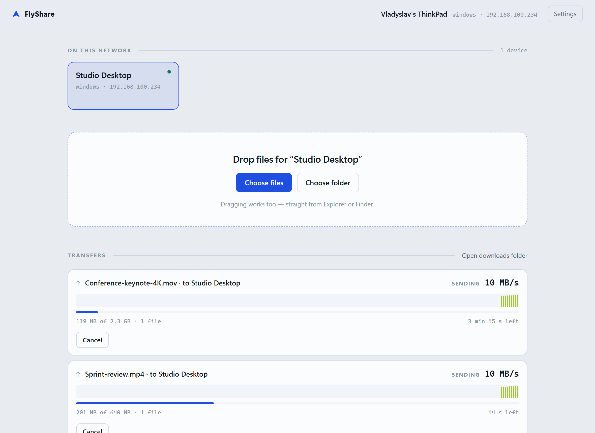
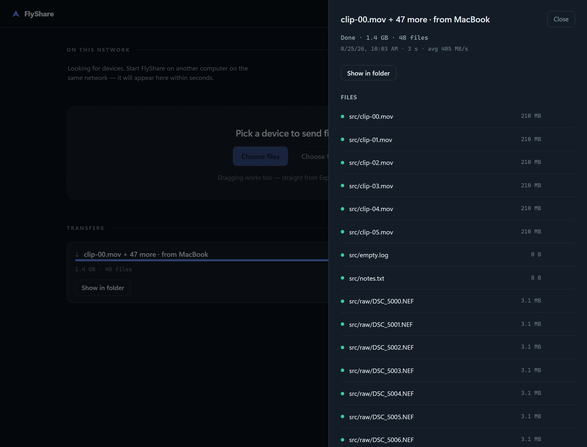
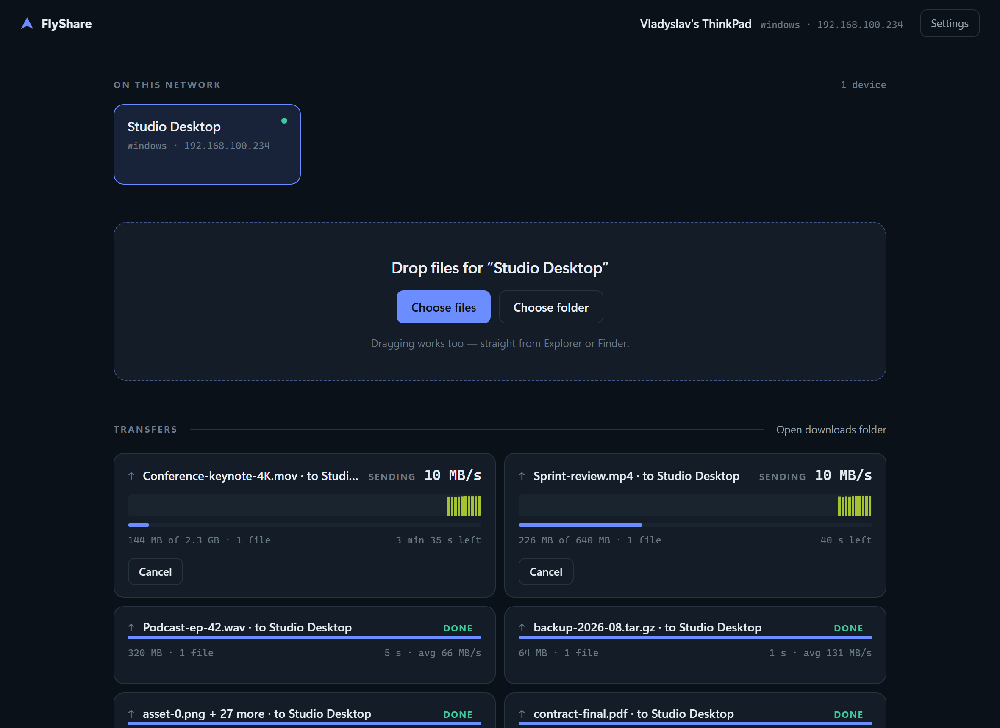
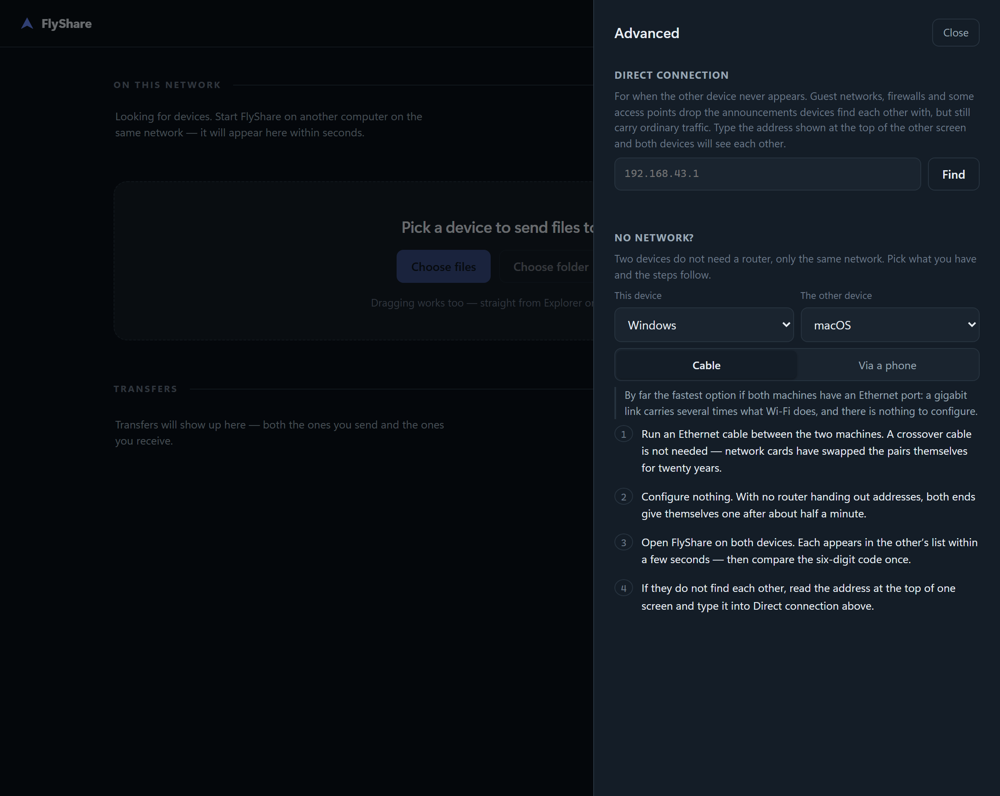
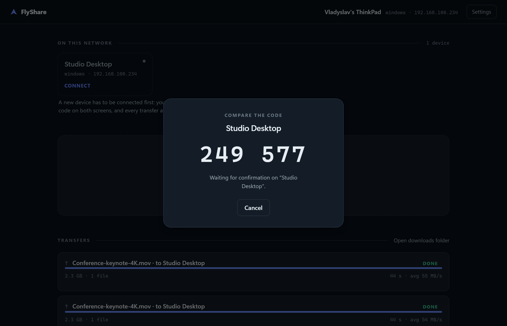
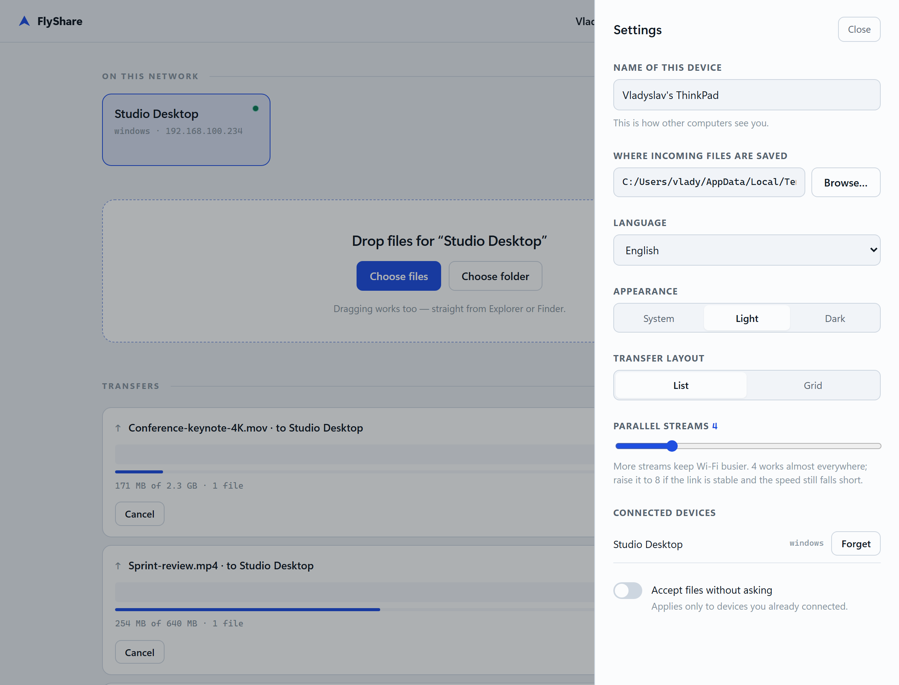

The problem
Two computers, one room, and somehow the file goes to Virginia
The usual options all take a detour. FlyShare does the obvious thing instead: it opens a connection between the two machines and sends the bytes.
Cloud drives
Upload at your connection's slowest speed, wait, then download it all back. A 4 GB video can take an hour to travel three metres.
Chat apps
Size caps, queues, and silent re-encoding. What arrives is often not what you sent.
USB sticks
Two copies instead of one, a walk across the room, and a filesystem argument between Windows and macOS.
What it needs
One network. That is the whole requirement.
Not a router, not an internet connection, not an account. The two devices only have to be able to reach each other — and there is more than one way for that to be true.
The Wi-Fi you are already on
Home, office, a friend's flat. Both devices join it and each appears in the other's list within seconds. Nothing is uploaded anywhere; the bytes go from one disk to the other and never leave the building.
Or a phone hotspot
No router within reach? Turn on the hotspot on any phone and join both devices to it. Mobile data can stay switched off — what two devices on a hotspot send each other never leaves it, so none of it is spent.
Or type the address
Guest networks sometimes drop the announcements devices find each other with while still carrying everything else. Advanced → Direct connection takes the address shown on the other screen and knocks on it directly.
Speed
Built to saturate the link, not the CPU
A single TCP connection on Wi-Fi is capped by its congestion window and stalls on every lost packet. FlyShare opens several and lets them recover independently, so the radio stays busy.
Encryption costs about 45% of peak throughput — and it does not matter. 465 MiB/s is 3.7 Gbit/s, roughly four times what a real Wi-Fi 6 link carries. On an actual network the radio is always the bottleneck, so encryption is free.
Bytes skip the parser
Control messages are JSON; payload is raw. Nothing is base64'd, escaped, or turned into a string on the way through.
Positional writes
The receiver reserves each file at full size first, so every stream writes at its own offset without waiting on the others.
Chunked by size
Big files split across streams; small files go one per stream. A folder of a thousand items spreads out on its own.
Security
Compare six digits once. Everything after that is encrypted.
The first time two devices meet they each derive the same six-digit number from a key exchange. You check that both screens agree — that is what rules out anything sitting in the middle — and the devices remember each other for good.
Vladyslav's ThinkPad
249 577
Waiting for confirmation
Studio Desktop
249 577
Codes match → confirm
salt = X25519(long-term keys pinned at pairing) → authentication
info = "flyshare-session-v2" + both device ids )
TLS 1.3, always
Every connection is encrypted with a key derived from the pairing. There is no unencrypted mode to fall back to, and no way to downgrade into one.
Forward secrecy
Each connection uses a throwaway key. Traffic recorded today stays unreadable even if the key file is stolen tomorrow.
Consent, not convenience
Nothing is written to disk until you accept. An unpaired device cannot get past the handshake, or learn your filenames.
The six-digit code has a subtlety worth naming. Deriving it straight from the key exchange would be broken, not merely weaker — a machine in the middle picks its own keys, so it could try about a million of them until the two codes it displays happen to match. FlyShare borrows ZRTP's fix: the responding device commits to a hash of its key before it sees the other's, so neither side can go shopping for a key after the fact.
The interface
Small, quiet, and honest about what the network is doing
Four languages, light and dark, list or grid. The one place saturated colour appears is the throughput trace, where hue encodes actual speed — so you can see a Wi-Fi dip and its recovery rather than a smoothed average. The list outlives the app, and any transfer on it opens file by file.






Download
One file. No installer. No Node.js required.
Run it on both devices, compare the code once, and you are done. Builds are unsigned, so Windows SmartScreen and macOS Gatekeeper will ask the first time, and Android will ask permission to install from that source.